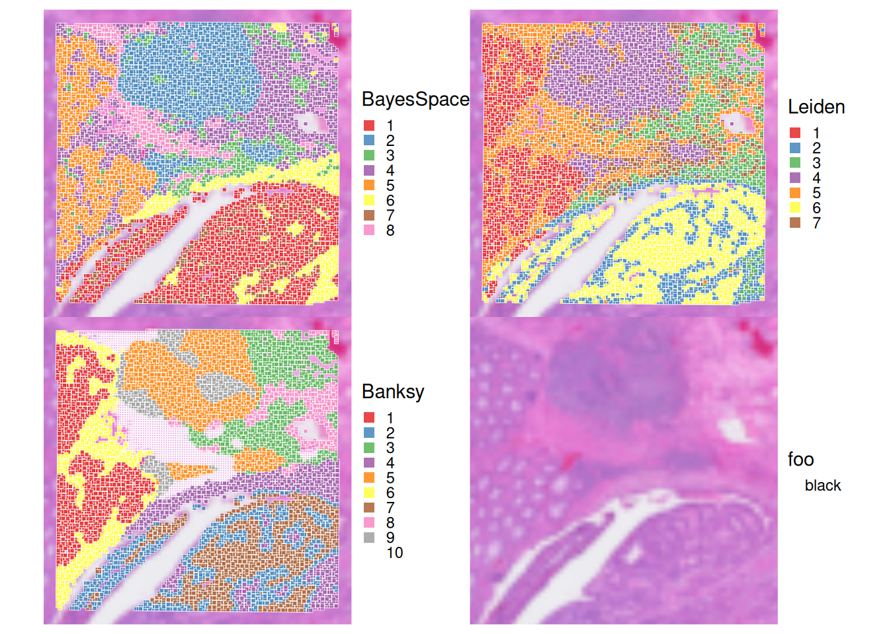
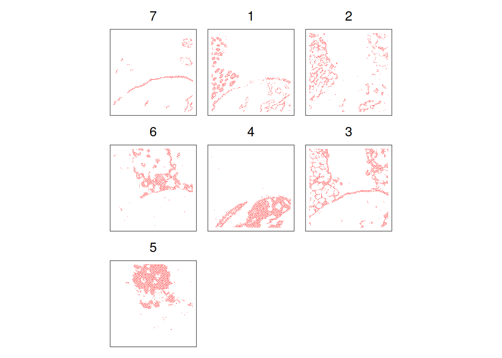
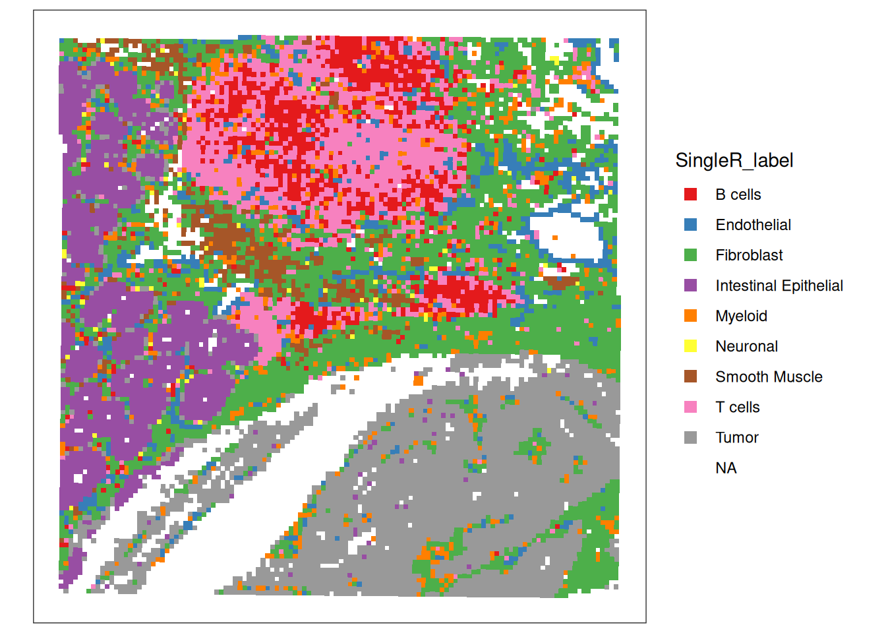
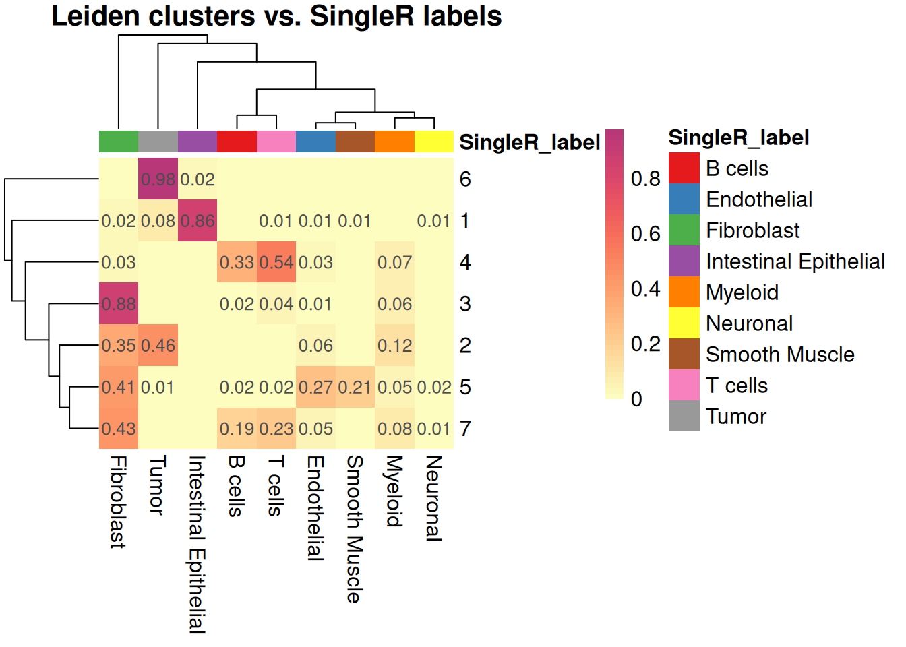

library(Banksy)
library(igraph)
library(ggspavis)
library(BayesSpace)
library(nnSVG)
library(HDF5Array) # For loading object
library(patchwork)
library(SpatialExperiment)
library(scran)
library(scater)
library(scrapper)
library(SingleR)
library(qs2)
library(viridis)
library(RColorBrewer)
library(pheatmap)Exercise 4
Clustering and Spatially-aware clustering
In the next section we will explore clustering methods for spatial transcriptomics data, including classical non-spatially aware and spatially-aware approaches.
Learning Objectives
By the end of this exercise, you will be able to:
- Perform non-spatially aware clustering using graph-based methods (Leiden clustering).
- Perform spatially-aware clustering using Bayesian modeling (BayesSpace) and graph-based methods (Banksy + Leiden).
- Visualize and compare clustering results from different methods on tissue slides.
Clustering
Load the previously saved SpatialExperiment object which contains information on the HVGs and dimensionationality reduction computed with Banksy and PCA.
spe <- loadHDF5SummarizedExperiment(dir="results/day1", prefix="01.3_spe")Non-spatial aware clustering
Clustering methods can be categorized into non-spatially aware, classically used for scRNA-seq analysis, and spatially-aware methods. We will first explore non-spatially aware clustering using graph-based methods.
Leiden clustering
As commonly done in single-cell RNA-seq analysis, we can perform graph-based clustering using the Leiden algorithm on a shared nearest-neighbor (SNN) graph constructed from the PCA results.
# build cellular shared nearest-neighbor (SNN) graph
g <- buildSNNGraph(spe, use.dimred="PCA", type="jaccard", k=20)
# cluster using Leiden community detection algorithm
k <- cluster_leiden(g, objective_function="modularity", resolution=0.6)
# assign cluster labels to spe object
spe$Leiden <- factor(k$membership)
table(spe$Leiden)
1 2 3 4 5 6 7
1844 1471 1459 2238 2302 2201 1100 Spatialy aware clustering
Clustering methods can also incorporate spatial information to identify spatial domains or regions in the tissue. Here we will explore two different approaches: Bayesian modeling (probabilistic) and spatially-aware graph-based clustering.
Probabilistic: BayesSpace
We can use the BayesSpace package to perform spatially aware clustering using a Bayesian modeling approach.
# prepare data for 'BayesSpace'
# skipping PCA (already computed)
spe <- spatialPreprocess(spe, skip.PCA=TRUE)
# perform spatial clustering with 'BayesSpace'
# using 'd=10' PCs and targeting 'q=8' clusters
spe <- spatialCluster(spe, q=8, d=10, nrep=1e3, burn.in=100)
spe$BayesSpace <- factor(spe$spatial.cluster)
table(spe$BayesSpace)
1 2 3 4 5 6 7 8
1796 524 1716 2495 2592 816 1681 995 Graph-based: Banksy
We have computed spatially-aware principal components using Banksy already in the previous practical. We will now used these to perform SNN graph-based Leiden clustering, in order to obtain spatially-aware clusters. When building the SNN graph, we will use the same parameters we have used before for the non-spatially aware graph.
# perform SNN graph-based clustering on 'Banksy' PCs using
g <- buildSNNGraph(spe, use.dimred="PCA_banksy", type="jaccard", k=20)
# cluster using Leiden community detection algorithm
k <- cluster_leiden(g, objective_function="modularity", resolution=0.6)
spe$Banksy <- factor(k$membership)
table(spe$Banksy)
1 2 3 4 5 6 7 8 9
1481 1154 1395 1214 2379 1922 953 1565 552 Visualisation of the different clustering methods:
Let’s visualize the clustering results from the different methods on the tissue slide.
# Define the three clustering methods to compare
ks <- c("BayesSpace", "Leiden", "Banksy")
# Plot spatial distribution of clusters for each method
plots <- c(lapply(ks, \(.) {
plt <- plotVisium(spe, annotate=., zoom = T, point_shape = 22, point_size = 1)
plt
}) ,
plotVisium(spe, zoom = T, spots=FALSE )) # add a plot of the tissue without spots
# combine plots
plots |> wrap_plots(nrow=2) &
scale_fill_brewer(palette = "Set1") &
theme(legend.key.size=unit(0, "lines"), legend.justification="left")
It can help us to visualise the clusters one by one, in order to better see their spatial distribution. We take as an example the Banksy clusters:
# plot selected clusters in order of frequency,
# highlighting cells assigned to cluster 'k'
lapply(tail(names(sort(table(spe$Banksy))), 8), \(k) {
spe$foo <- spe$Banksy == k
spe <- spe[, order(spe$foo)]
plt <- plotCoords(spe, annotate="foo")
plt$layers[[1]]$aes_params$stroke <- 0
plt$layers[[1]]$aes_params$size <- 0.2
plt + ggtitle(k)
}) |>
wrap_plots(nrow=3) &
scale_color_manual(values=c("white", "red")) &
theme(plot.title=element_text(hjust=0.5), legend.position="none")
Exercise 1
Visualise the clusters obtained with the 3 methods, and compare their spatial distribution. What do you observe?
Perform cell-type annotation of the spots
We’ll use the annotation of the scRNA-seq dataset (10X FLEX technology) generated along with the VisiumHD used in the practicals (See the record on GEO and the related Github repository). We subsetted this reference dataset to 5,000 cells.
To annotate each spot, we use the SingleR() method, which uses a correlation-based approach comparing test cells (here: spots) to reference samples with known cell-type annotation.
ref.se = qs_read("data/Human_Colon_Cancer_P1/NatGenetics2025_CRC_5k.SE.qs")
table(colData(ref.se)$labels)
B cells Endothelial Fibroblast
316 308 868
Intestinal Epithelial Myeloid Neuronal
523 599 296
Smooth Muscle T cells Tumor
649 351 1090 # Predict cell-type using SingleR
pred <- SingleR(test = logcounts(spe),
ref = assay(ref.se, "data"), # log-normalized counts
labels = ref.se$labels,
aggr.ref = TRUE, # pseudo-bulk aggregation of reference labels
fine.tune = FALSE, # for faster computation here
)
spe$SingleR_label <- pred$pruned.labels
table(spe$SingleR_label)
B cells Endothelial Fibroblast
1007 840 3340
Intestinal Epithelial Myeloid Neuronal
1633 656 66
Smooth Muscle T cells Tumor
505 1570 2991 # visualize the predictions on the tissue slide.
plotCoords(spe, annotate="SingleR_label", point_shape = 15, point_size = 1) +
scale_colour_brewer(palette = "Set1")
plotVisium(spe, annotate="SingleR_label", zoom = T, point_shape = 22, point_size = 1) +
scale_fill_brewer(palette = "Set1")
Exercise 2
What do you think about this annotation? Do you identify potentially relevant biological structures? How are these isolated above in the calculated clusters and spatial domains?
Answer
Let’s compare to the Leiden cluster for example:
tab_prop <- prop.table(table(spe$Leiden, spe$SingleR_label), margin = 1)
## For display: round and remove 0s
num_mat <- round(tab_prop, 2)
num_mat[num_mat == 0] <- ""
## Annotation colors
group_df = data.frame(row.names = colnames(tab_prop), SingleR_label=colnames(tab_prop))
ann_colors = list(
SingleR_label = setNames(object = brewer.pal(9, "Set1"), colnames(tab_prop)))
pheatmap(
tab_prop,
cluster_rows = TRUE,
cluster_cols = TRUE,
color = viridis(100, option = "magma", direction = -1)[0:50],
display_numbers = num_mat,
fontsize_number = 10,
fontsize = 12,
border_color = NA,
main = "Leiden clusters vs. SingleR labels",
annotation_col = group_df,
annotation_colors = ann_colors
)
Save the object
Save the SpatialExperiment object for the next steps:
saveHDF5SummarizedExperiment(spe, dir="results/day1", prefix="01.4_spe", replace=TRUE,
chunkdim=NULL, level=NULL, as.sparse=NA,
verbose=NA)Clear your environment: